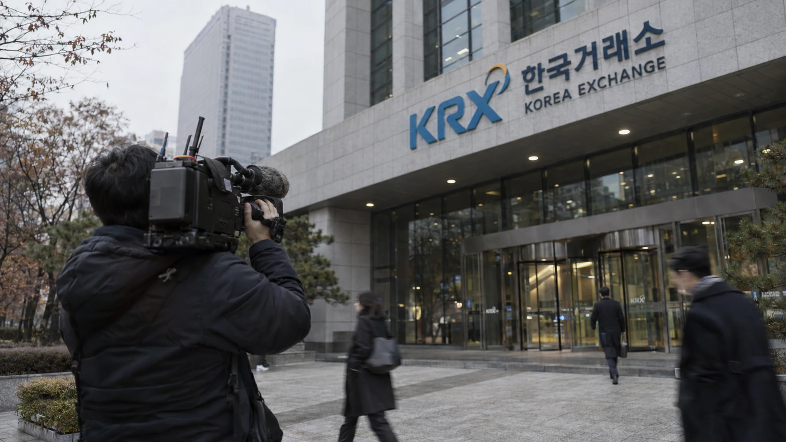

Asian Markets Drop as US Chip Selloff Spreads, Then Wall Street Stabilizes
Japan and South Korea bore the brunt of Friday's global technology retreat, while American shares ended a volatile session mostly higher.

Asian stock markets fell sharply on Friday, November 6, after a steep technology selloff in the United States exposed investor anxiety over AI investment and valuations. Japan's Nikkei 225 fell about 6%, while South Korea's Kospi also lost about 6% after trading was temporarily halted. Taiwan's benchmark likewise suffered heavy losses. The decline reached Europe before American benchmarks steadied later in the day, according to Reuters and market reporting. The pattern showed how a selloff centered on US technology companies moved across trading sessions rather than occurring simultaneously in every region.
The global retreat followed Thursday's US session, when the Nasdaq Composite lost 5.5% and investors sold semiconductor shares. The selloff reflected concerns about the cost and expected returns of artificial-intelligence infrastructure, alongside uncertainty over possible regulatory constraints following the US midterm elections. These are reported market explanations, not a single verified cause of every share-price move.
Asia bears the heaviest selling
South Korean equities experienced some of Friday's sharpest pressure. The Kospi fell as much as 8.8% intraday, prompting a temporary trading suspension, before recovering part of the loss. Reuters reported that Japanese shares were down roughly 6% and South Korean and Taiwanese shares had fallen more than 8% at points during the morning. Those intraday figures should not be confused with final closing returns.
Chipmakers and companies closely tied to AI infrastructure were among the weakest performers. South Korea's SK Hynix and Samsung Electronics came under pressure, while technology names in Japan also fell. Heavy exposure to the AI supply chain helped transmit a decline that had begun in US technology shares. The move followed a period when strong demand for AI chips had supported earnings expectations across several Asian markets.
China's and Hong Kong's major benchmarks showed smaller losses than South Korea and Japan in the available market reports. That variation matters: the episode was not a uniform repricing of all Asian assets. It was especially severe where investors saw greater exposure to semiconductor valuations and the expected pace of AI capital spending.
The transmission mechanism is discussed in TTN Finance's earlier report on the Nasdaq's 5.5% decline. The current article focuses instead on the international response to that US market shock, rather than repeating a day-by-day US trading recap.
Europe follows, with smaller declines
Major European stock markets also fell on Friday. Germany's DAX lost roughly 2% by the close, while Britain's FTSE 100 and the broader European benchmark posted losses. Different news updates quoted figures from the opening, midday and closing sessions, so they should not be combined as though they were measured at the same time.
European markets were affected by uncertainty over technology valuations and the economic outlook, but their industry composition differs from that of Taiwan or South Korea. The much smaller benchmark declines therefore do not imply the absence of risk. They show that industry weightings matter when investors sell companies linked to a particular technology investment cycle.
The selloff also raised a financing question. Data-center operators must secure electricity, land, equipment and debt financing long before facilities begin producing returns. That constraint has been examined in our coverage of data-center power and financing risks. A decline in technology shares does not automatically cancel those projects, but higher borrowing costs can make marginal investments less attractive.
Friday's US recovery does not erase the week
By Friday's close, US stocks were mixed rather than uniformly lower. The S&P 500 gained 0.3% to 7,376.86 and the Nasdaq Composite rose 1.1% to 24,579.42; the Dow Jones Industrial Average fell 0.5% to 51,285.73, according to AP's index summary. The bounce gave international investors a different signal from Thursday's selloff, although it did not reverse the week's losses.
For the full week, the Nasdaq lost 3.4%, the S&P 500 fell 2.7%, and the Dow declined 0.9%. Those numbers describe the US weekly result; they are not additional Friday losses. A companion TTN Finance weekly Wall Street review covers the domestic jobs report and Federal Reserve debate in detail.
The next test will come when Asian markets reopen. Investors will be able to assess whether the US stabilization was enough to support companies most exposed to AI spending. The US inflation report scheduled for Tuesday, November 10, will provide another data point for interest-rate expectations, though no single release determines the direction of global stock markets.
The clear result of Friday's trading is geographic: the technology shock crossed borders, but the magnitude varied widely across the regions and industries affected. It is too early to label the decline either a lasting breakdown in AI investment or a fully resolved correction. The following sessions will reveal whether selling pressure persists beyond the initial repricing.